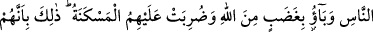

edenlere vâd ettikleri iki kat ecri de kazanarak dünyevî zevklerden daha fazla
faydalanırlar, önderlikleri pekişirdi.
“Onlardan inananlar da var.” Sanki “Kitap ehlinin hepsi kâfir mi, yoksa inananları
da var mı?” diye soruluyor. Cevâben: “Kitap ehlinden, iki cihân saâdetine nâil olan
Abdullah b. Selam ve arkadaşları gibi belirli bazı inananlar da vardır.” deniliyor. “Ama
çokları fâsıktırlar.” Hudûdu aşmışlardır ve küfürde ısrar etmektedirler.
111. Onlar (ehl-i kitap) size, incitmekten başka bir zarar veremezler. Sizinle
savaşa girecek olsalar, size arkalarını dönüp kaçarlar. Sonra kendilerine yardım da
edilmez.
“Size eziyetten başka bir zarar veremezler.” Âyetteki istisnâ, istisnâ-i müfarrağdır.
Yani hiçbir netice vermeyecek aldırış bile edilmeyecek tehdit ve ta’n gibi eziyetlerden
başka zarar veremezler.
“Sizinle savaşsalar bile.”; sizinle savaşmaya kalkışsalar bile “Size arkalarını dönüp
kaçarlar.” Yani sırtlarını sizin yüzünüze çevirirler; sizi öldürme ya da esîr etme gibi
hiçbir başarı kazanamadan bozguna uğramış bir vaziyette arkalarını dönüp kaçarlar.
“Sonra onlara yardım da edilmez.” cümlesi kendilerine hiç kimse tarafından yardım
edilmez; kimse sizin bunları öldürmenize, ya da esîr almanıza engel olamaz, demektir.
Bu âyet-i kerîmede, îman eden kitap ehlinin kalplerine rahatlık ve sükûn
verilmektedir. Çünkü kitap ehli bunları, çeşitli sözlerle rahatsız edip kınayarak, tehdit
ederek ve saptırmaya çalışarak eziyet ediyorlardı. Bu âyet aynı zamanda, kitap ehlinin
sözlü sataşmalardan daha ileri gidip önemli bir darbe vuramayacağını belirterek ehl-i
kitaptan; îman etmiş olanlara moral vermektedir. Üçüncü olarak âyet-i celîle,
inananların, kitap ehline galebe çalacağını, onlardan intikam alacağını ve bunların
sonunun, rezâlet, zillet olacağını; bir daha toparlanamayacaklarını; hiçbir kuvvet ve
başarı kazanamayacaklarını vâdetmektedir. Nitekim Kurayza, Nadir ve Kaynuka
oğulları ile Hayber yahûdîlerinin hâli böyle olmuştur.